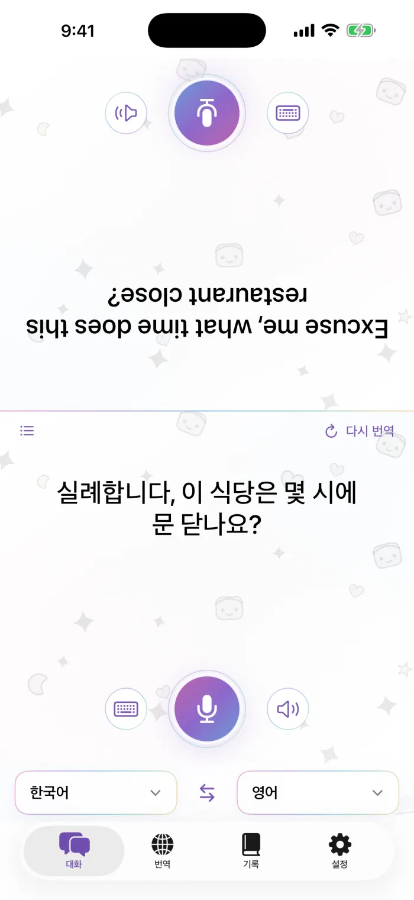
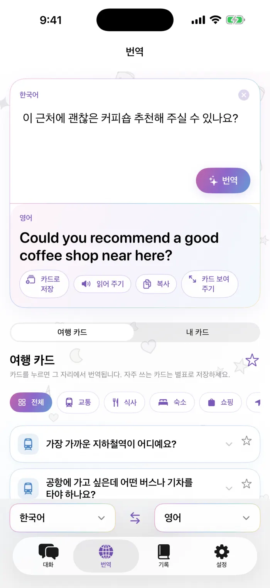
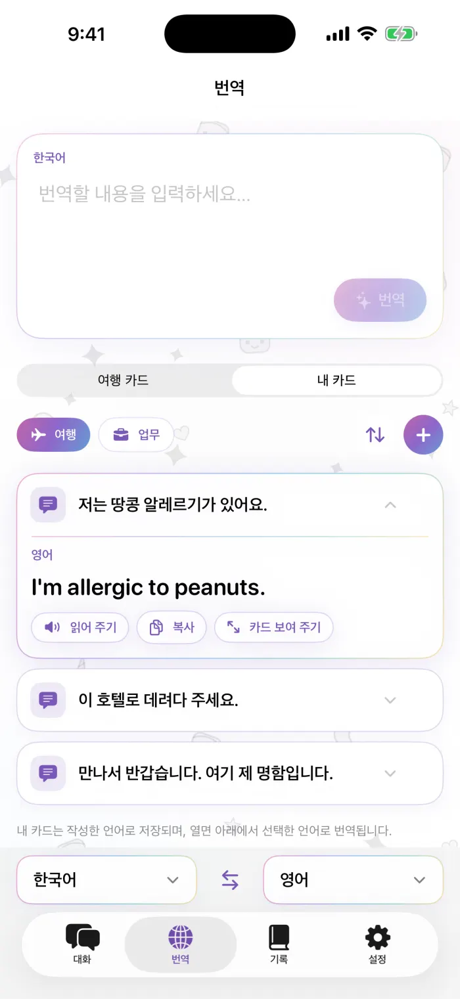
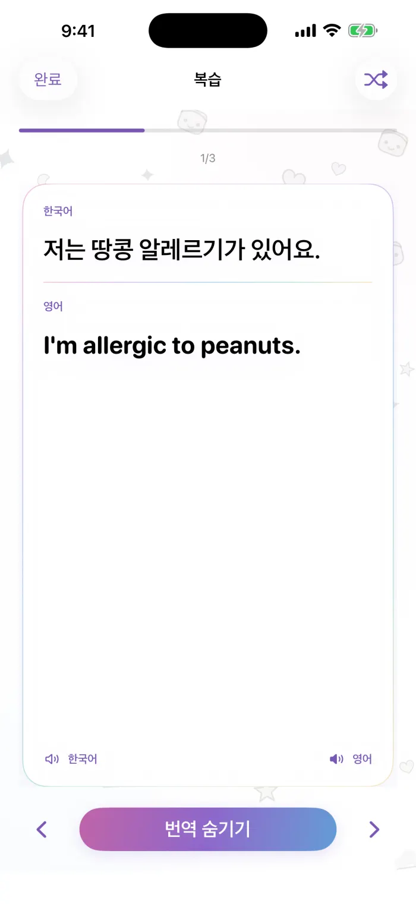
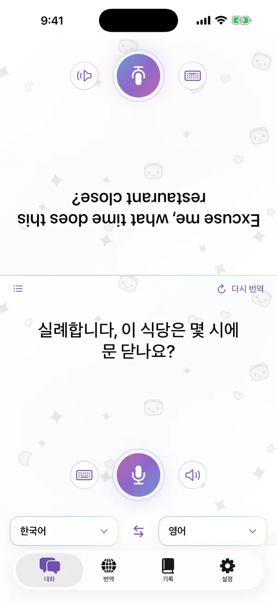
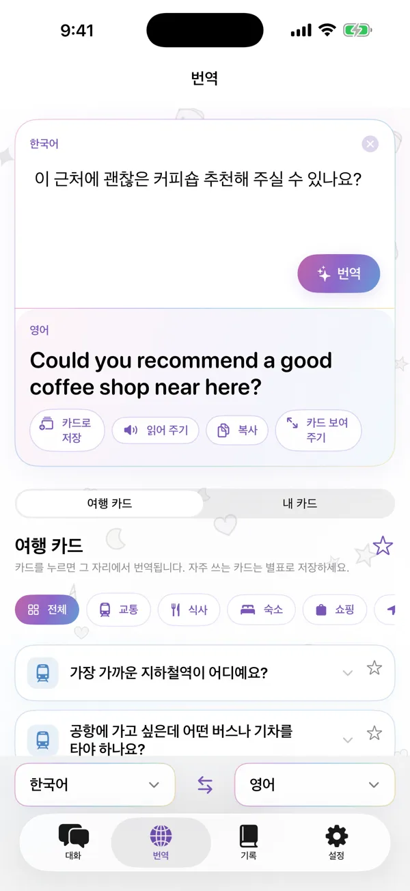
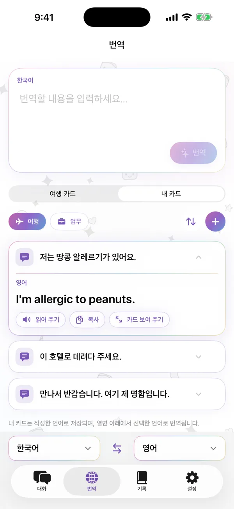

마주 보고 대화하기
화면이 둘로 나뉘고 상대방 쪽은 거꾸로 표시되어, 휴대폰을 사이에 두고 대화할 수 있어요. 말하거나 입력하면 각자 자신의 언어로 번역을 볼 수 있습니다.
- 기기 내 음성 인식
- 모든 문장 다시 듣기
- 번역을 소리 내어 읽기
iPhone용 번역 앱
마주 보고 대화하고, 나만의 문구 카드를 만들고, 모든 번역을 iPhone에서 바로 — 오프라인에서도 가능해요.
App Store에 곧 출시됩니다iPhone · iOS 18 이상 · 무료 다운로드
실례합니다, 이 식당은 몇 시까지 하나요?
Excuse me, what time does this restaurant close?
실제 iPhone에서 앱을 짧게 둘러보세요.
화면이 둘로 나뉘고 상대방 쪽은 거꾸로 표시되어, 휴대폰을 사이에 두고 대화할 수 있어요. 말하거나 입력하면 각자 자신의 언어로 번역을 볼 수 있습니다.
문장을 입력하거나 붙여넣어 번역하세요. 복사하거나 소리로 들려주거나, 큰 전체 화면 카드로 눈앞의 상대에게 보여줄 수 있어요.
여행이나 업무에서 자주 쓰는 말을 카드로 저장하고, 이름을 붙이고 순서를 바꿀 수 있는 덱으로 정리하세요. 어떤 번역이나 기록도 카드로 저장할 수 있고, 다음에는 선택한 언어로 번역됩니다.
교통, 식사, 숙박, 쇼핑, 길 찾기까지. 카드를 탭하면 그 자리에서 바로 번역되고, 자주 쓰는 카드는 별표로 표시해 둘 수 있어요.
모든 대화와 번역이 iPhone에 날짜별로 정리되어 저장되고, 즐겨찾기도 할 수 있어요. 복습 모드는 기록을 플래시 카드로 바꿔 줍니다.
번역에는 Apple의 기기 내 모델을 사용합니다. 언어를 한 번 다운로드하면 연결 없이도 계속 쓸 수 있고, 말하거나 입력한 내용은 서버로 전송되지 않아요.
앱의 실제 화면이에요. 번호는 각 화면 옆 설명과 서로 대응돼요.







대화와 번역에 필요한 기능은 모두 무료예요. Pro는 나만의 카드를 많이 만들고 싶은 분을 위한 옵션입니다.
주간, 월간 또는 한 번 결제하는 평생 이용권 중에서 선택할 수 있어요. 가격은 App Store에서 현지 통화로 표시됩니다.